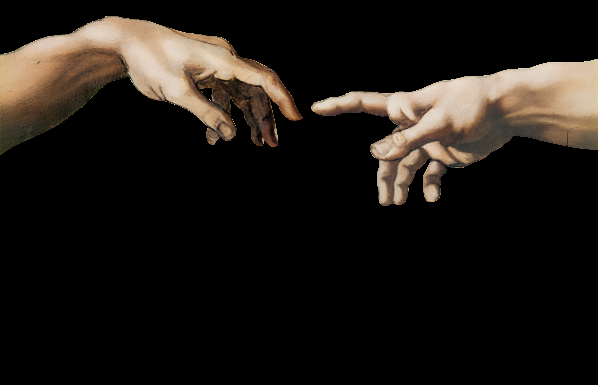

We bridge the gap between cutting-edge research and real-world deployment.
At GHOST Physical AI we work on robotics dexterity, navigation and manipulation, in the wild. We value two things above all: innovation and reliability.
Drobage is a riverside cleanup robot built to do what no system does reliably yet: pick up real garbage in the wild. We treat it as a proving ground for robotics' hardest open problem: dependable manipulation in unstructured environments, testing, breaking, and advancing state-of-the-art methods along the way. Everything below is split into the research we may publish and the deployment we work on. The line isn't strict, some of the research involves real implementation that could just as easily count as deployment, but keeping the two loosely separated helps.
A study of cutting-edge, and not only cutting-edge, approaches to manipulation and navigation, compared on the same robot and the same task. The current robot stack runs on ROS2, with an adaptable planner built on MoveIt2 and OMPL. The system is under active research and deployment, aimed at reliable autonomous mission execution. We document what we find along the way, which is the material that goes into the paper. Currently expanding onto the Leo Rover.
A dataset of trash in the wild. We combine simulation, scraped web imagery, and our own field collection. The pipeline collects raw data, labels it with SAM3, and distills the result into a compact detector, YOLOv8s or an alternative, light enough to run on the robot. A parallel deployment thread explores data augmentation techniques, possibly in 3D.
A decoding head built on top of diffusion-based VLAs. It samples several candidate trajectories and checks the physical feasibility of each predicted action chunk before the robot commits to one. We're trying it out on cheap hardware rather than expensive research rigs. The aim is to go deeper into VLAs, with a real shot at advancing the state of the art, and a possible delta utility for the project's own development. May grow into its own paper rather than a section of the robot paper.Note: PVD is the most exploratory, standalone track here. It's about advancing the method itself, and isn't meant to run on the robot in the wild (at least, we don't see it there yet).
Closed-loop grasp prediction from the depth camera, building on a pretrained Dex-Net. GG-CNN scores grasp quality straight from the depth feed; the network works. What remains is shipping it onto our arm: the SO-101 or the Waveshare RoArm-M3-Pro.
Reeds–Shepp curves and kinodynamic RRT for the non-holonomic base. Today the stack drives to the object and then hands everything to the arm, so if the target shifts out of reach (a gust moves it from 20 cm to 10 cm), it has to be re-detected, and the base never backs up or repositions. Planning the base and arm together in MoveIt2 closes that gap, treating the robot as a single system instead of a base plus an isolated arm.
Nav2 running with a depth camera and 2D lidar. Next: add an IMU to fix odometry, integrate 3D lidar once we have it, and migrate the whole system from the Cobra Flex base onto the Leo Rover.
The semantic segmentation module analyzes camera images by labeling every single pixel with a specific category. This process turns raw video into a structured map, separating drivable paths from obstacles to build a reliable understanding of the environment.
Single-view perception for picking in clutter. From one RGB-D frame, reconstruct complete, segmented 3D meshes of every object in view, including the occluded parts the depth camera never sees, then plan grasps against the full object shape instead of a partial point cloud. Built on SceneComplete (paper), which chains pretrained vision modules (object description, grounded segmentation, inpainting, image-to-3D, and 6DOF pose) into a whole-scene reconstruction that supports both parallel-jaw and dexterous grasping. The target is reliable manipulation in the wild: cluttered, occluded riverbank scenes full of objects no model has seen before.
A small group of roboticists, ML researchers, field engineers and students, testing novel research ideas in the wild, evaluating what worked and what didn't.
Read the researchWant to push intelligent robotics with us? Whether you're a student, an engineer, or simply someone interested in the field, get in touch, even if you're not sure of your capabilities.
Get in touch